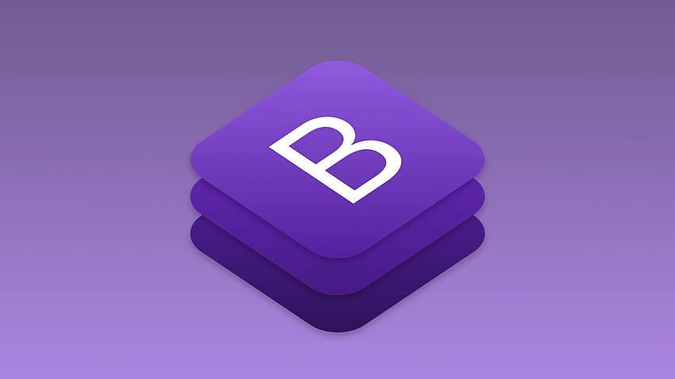

Bootstrap is an HTML, CSS and JS library that focuses on simplifying the development of informative web pages (as opposed to web applications). The primary purpose of adding it to a web project is to apply Bootstrap's choices of color, size, font and layout to that project. As such, the primary factor is whether the developers in charge find those choices to their liking. Once added to a project, Bootstrap provides basic style definitions for all HTML elements. The result is a uniform appearance for prose, tables and form elements across web browsers. In addition, developers can take advantage of CSS classes defined in Bootstrap to further customize the appearance of their contents. For example, Bootstrap has provisioned for light- and dark-colored tables, page headings, more prominent pull quotes, and text with a highlight.
 link text